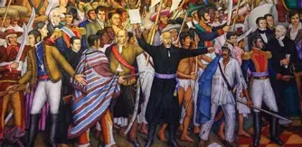
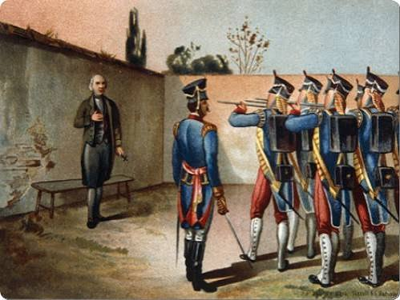

alejandra karina villalvazo vazquez
El Grito de Dolores (16 de septiembre de 1810)
1. En la madrugada del 16 de septiembre de 1810, el cura Miguel Hidalgo y Costilla convocó a los habitantes de Dolores, Guanajuato, a levantarse en armas. La conspiración de Querétaro —en la que participaban Hidalgo, Ignacio Allende, Juan Aldama y Josefa Ortiz de Domínguez— había sido descubierta, así que adelantar el movimiento fue una decisión de urgencia.
Ese llamado, conocido como el Grito de Dolores, no fue un discurso con un texto único y fijo; lo que se transmitió fue la proclama de tomar las armas contra el mal gobierno y en defensa de la religión y del rey Fernando VII, preso entonces en Francia por la invasión napoleónica. En pocos días se sumaron miles de campesinos, mineros e indígenas, y el movimiento pasó de ser una conspiración de criollos ilustrados a un levantamiento popular de masas.

La batalla de Monte de las Cruces (30 de octubre de 1810)
Después de tomar San Miguel el Grande, Celaya, Guanajuato y Valladolid, el ejército insurgente avanzó hacia la Ciudad de México. El 30 de octubre de 1810 se enfrentó a las fuerzas realistas de Torcuato Trujillo en el Monte de las Cruces, cerca de Toluca.
La victoria fue para los insurgentes, y el camino a la capital quedó prácticamente abierto. Sin embargo, Hidalgo decidió no entrar a la Ciudad de México y ordenó la retirada hacia el Bajío. Las razones siguen siendo tema de debate entre historiadores: el desgaste de sus tropas, la falta de municiones, el temor a un saqueo descontrolado o el cálculo de que tomar la capital no garantizaba ganar la guerra. Ese momento se considera el punto más alto de la primera etapa y también el inicio de su declive militar.
.jpg)
La captura y ejecución de los primeros líderes (1811)
Tras la derrota en la batalla de Puente de Calderón (enero de 1811), los insurgentes se replegaron hacia el norte buscando apoyo en Estados Unidos. En Acatita de Baján, Coahuila, fueron traicionados y capturados por las fuerzas realistas de Ignacio Elizondo.
Hidalgo, Allende, Aldama y Mariano Jiménez fueron juzgados y fusilados en Chihuahua ese mismo año. Sus cabezas se colgaron en las esquinas de la Alhóndiga de Granaditas, en Guanajuato, como escarmiento público. Lejos de terminar el movimiento, la represión lo volvió un símbolo: la lucha continuó bajo el mando de José María Morelos, quien organizó un ejército más disciplinado y dio al conflicto un contenido social y político más claro, plasmado en los Sentimientos de la Nación (1813) y en la Constitución de Apatzingán (1814).

La consumación de la Independencia (27 de septiembre de 1821)
Después de años de guerra irregular, la situación cambió cuando en España triunfó la revolución liberal de Rafael de Riego (1820), que amenazaba los privilegios de la Iglesia y del ejército en la Nueva España. Eso llevó a Agustín de Iturbide, antes militar realista, a pactar con Vicente Guerrero el Abrazo de Acatempan y a proclamar el Plan de Iguala (febrero de 1821), con sus tres garantías: religión católica, independencia y unión de todos los grupos.
Iturbide formó el Ejército Trigarante, que entró triunfante a la Ciudad de México el 27 de septiembre de 1821. Al día siguiente se firmó el Acta de Independencia y, poco después, los Tratados de Córdoba reconocieron la soberanía del nuevo país. Así terminó un proceso de once años que había comenzado como una revuelta popular y acabó como una negociación entre las élites.
.jpg)
La conspiración de Querétaro (1810)
Antes del Grito de Dolores, un grupo de criollos se reunía en Querétaro en tertulias literarias que en realidad eran reuniones políticas. Entre ellos estaban el corregidor Miguel Domínguez, su esposa Josefa Ortiz de Domínguez, el militar Ignacio Allende, el capitán Juan Aldama y el cura Miguel Hidalgo.
Planeaban levantarse en armas en diciembre de 1810, pero la conspiración fue descubierta. Doña Josefa, conocida como La Corregidora, logró avisar a Allende y Aldama antes de que la detuvieran, y ellos partieron a Dolores a advertir a Hidalgo. Ese aviso de última hora fue lo que adelantó el movimiento al 16 de septiembre y evitó que todo terminara antes de empezar.
Por qué importa: muestra que la Independencia no nació de un arranque espontáneo, sino de una red organizada de criollos descontentos con el dominio peninsular y con las reformas borbónicas.
.jpg)